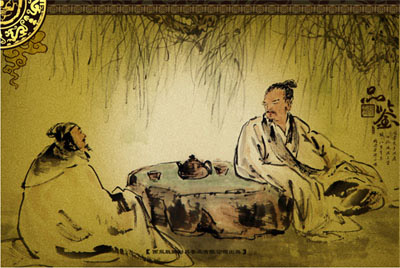

6000多年前，生活在浙江余姚田螺山一带的先民就开始植茶树，田螺山是迄今为止考古发现的、我国最早人工种植茶树的地方。
秦统—中国后，促进了四川和其他地区的经济交流，种茶和饮茶才由四川逐渐向外传播。先流传至长江流域。
公元前2世纪，西汉司马相如在《凡将篇》中提到的“荈诧”就是茶；西汉末年，在扬雄的《方言》中，称茶为“蔎”；在《神农本草经》（约成于汉朝）中，称之为“荼草”或“选”；
西汉后期到三国时代，茶发展成为宫廷的高级饮料。如在汉代《赵飞燕别传》中，有一节关于饮茶的记载。汉成帝崩，“后（即帝后）寝惊啼甚久，侍者呼问，方觉，乃言曰：适吾梦中见帝，帝自云中赐吾坐，帝命进茶。左右奏帝，后向日侍帝不谨，不合吸此茶。”这就说明在当时，茶已成为皇室中的一种饮料了。
东汉的《桐君录》（撰人不详）中谓之“瓜芦木”；南朝宋山谦之的《吴兴记》中称为“荈”；东晋裴渊的《广州记》中称之谓“皋芦”；
西晋到隋朝，茶逐渐成为普通饮料。关于饮茶的记载也日益增多。《广陵吾老传》中载有：“晋元帝时，有老姥每旦独提一器若，往市留之，市人竞买”之句，说明茶已逐渐成为普通饮料。
5世纪，北方饮茶相效成风。六七世纪再传播到西北。随着饮茶习惯的广为传播，茶叶消费量迅速增加，从此，茶叶成为中国各族人民普遍喜爱的一种饮料。
唐代陆羽（728—804）在《茶经》中指出：“茶之为饮，发乎神农氏，闻于鲁周公”。在神农时代（约在公元前2737年），即已经发现了茶树的鲜叶可以解毒。《神农本草经》曾有记载：“神农尝百草，日遇七十二毒，得茶解之”．反映的就是古代发现茶治病的起源，这说明中国利用茶叶最少已有四千多年的历史。[5]
至唐、宋时代，茶已成为“人家一日不可无”的普遍饮用之品。
明代顾炎武的《日
知录》写道：“秦人取蜀，始知若饮事。”可见，饮茶风习是从四川传出来的。因为隔着千山万水，“蜀道”险阻，种茶、饮茶局限于四川一带。